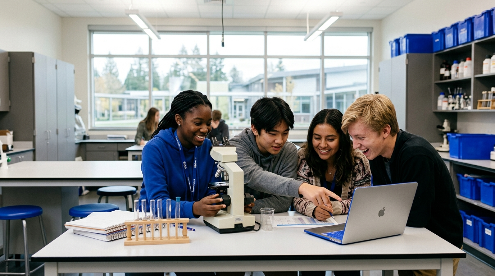

📍 Opposite MTN Mast, UpZango, Lokoja, Kogi State
📞 +234 803 245 7019 | ✉️ info@kayfund.edu.ng
Ages 2 – 5
Montessori-inspired phonics, early numeracy, sensory play, storytelling, and motor skill development.
Grades 1 – 6
Core literacy & numeracy, Basic Science, Civic Education, French, ICT & Coding, and Creative Arts.
JSS 1 – SS 3
Science, Humanities, and Commercial tracks with intensive WAEC, NECO, and JAMB CBT preparation.

Every student at Kayfund International School receives access to our online portal featuring: